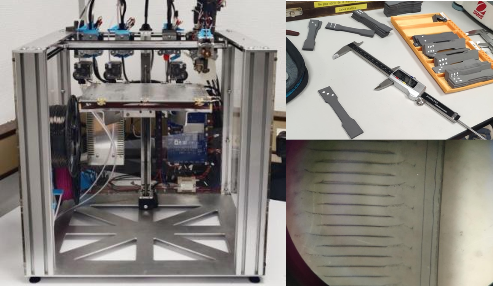
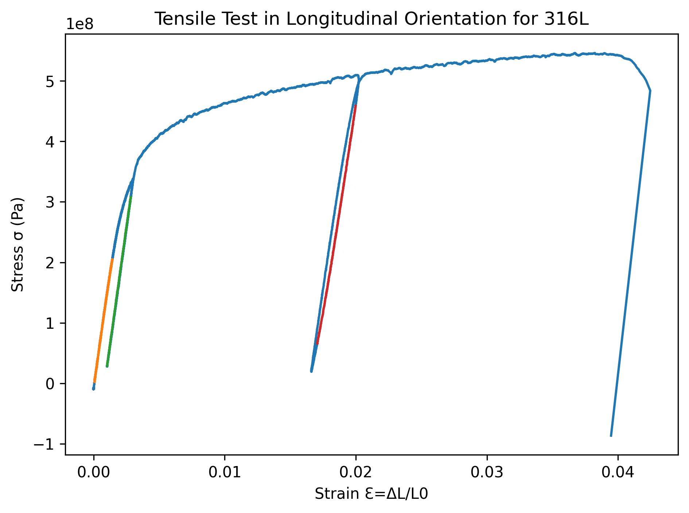

Refining printing process
- Particle-loaded material prone to clogging.
- Tuned printing parameters for repeatable samples.

LaMcube - Ecole Centrale de Lille
Traditional Selective Laser Sintering (SLS) for metal is an expensive and complex process. The FDM approach brings technical and budget affordability but needs to be refined for consistent mechanical properties of the printed parts.


